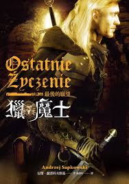

Guo Jie's fantasy world
The Witcher : The last wish

波蘭作家三十四年前出版的另類奇幻小說「獵魔士：最後願望」，是作者獵魔士系列的第一本小說，其中劇情、對話及人物設定都非常有特色，吸引人不斷地讀下去。獵魔士系列在東歐被奉為奇幻小說的另類經典。
我在２００７年玩過小說改編的第一人稱動作遊戲，只玩完第一章和第二章。現在只大概記得，遊戲每一章過關後，有選項可以選擇和劇情的女主角進一步發生關係，畫面鏡頭會拉遠，第一章是拉到城堡的外面，從斜上方的視角看著城堡，然後傳來女主角的呻吟及嬌喘；第二章鏡頭是在林林中，隔著河的建築物傳來女主角的呻吟及嬌喘。
當時我覺得很稀奇，居然有電腦遊戲會這樣設定。以遊戲銷售來說，奇幻題材又是第一人稱的遊戲，目標客戶應該是青少年，所以應該不會有十八禁的元素。後來才知道，本來原作就有很多既粗俗又有趣的類似橋段。
小說「獵魔士：最後願望」的內容是由主角在神殿休養時發生的六個橋段，分別帶出一篇之前發生的短篇故事。
第一章的序曲直接是十八禁，就一個女性到主角的房間，跨坐在主角身上，和主角做愛。
總共有六個短篇，標題依序是「獵魔士」、「童話的真實性」、「兩害取其輕」、「價錢的問題」、「世界的盡頭」及「最後的願望」。而每篇故事前面的一段段目前主角在神殿的橋段為「理智的聲音」。
第一篇「獵魔士」該主角出場，簡單的故事讓讀者了解主角的職業、能力及個性，以及在休道院休養的原因。在這篇中的配角「城主魏樂拉德」是一個說話很損的話嘮，讓我想起說話讓人即好笑又生氣、在學生時代的朋友。這篇故事中，國王與妹妹亂倫，生下來的小公主被咀咒變成吸血鬼，國主尋求獵魔士的幫助，把小公主從咀咒中解放出來。
第二篇「童話的真實性」也很有趣。主角在荒路上發現一對男女的屍體，追蹤後發現被咀咒成獸人的領主，主角把領主從咀咒及女吸血鬼的手中解救出來。
第一篇和第二篇中的吸血鬼種族不一樣，在「獵魔士」中「吸血鬼」就像是「怪物」這個詞一樣，是個集合名詞，泛指出沒攻擊人且會吃人的怪物。這可能是因為在波蘭的習俗就是這樣稱呼的，或是因為很多鬼怪沒有知名到有相對應的英文或中文譯名，也許連相對應的英文名也沒有，因為沒有那麼有名，所以只好翻成吸血鬼。但是翻成吸血鬼也沒翻錯，在文學中最早是沒有吸血鬼這種鬼怪，吸血鬼在文學上的先祖就是從東歐地方傳說中的一些鬼怪而創作出來的。